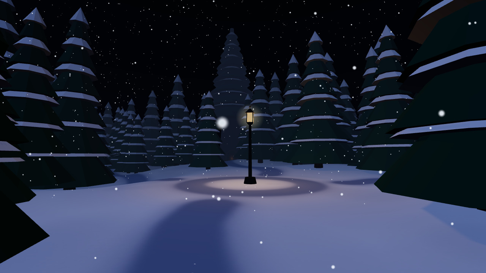

Hold ↑ or W to walk, ↓ or S to back up, ← → or A D to turn, or drag across the view. On a phone, put your left thumb down in the lower left to walk; drag on the right to turn.

This place is reached through other places.